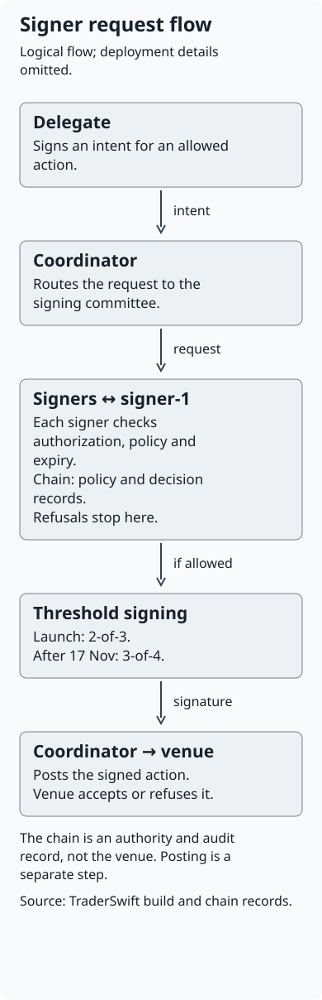
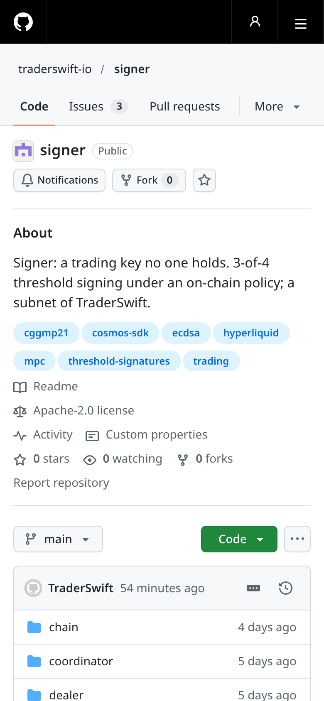
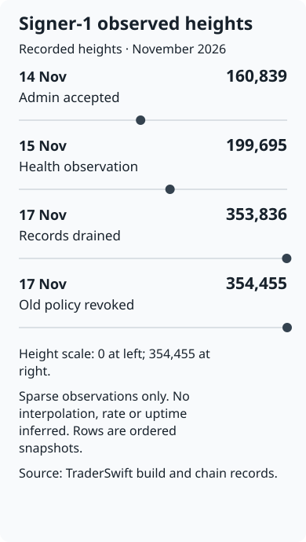

What is signer-1, and what did it do this week?
The live launch with real money, and the move to new machines.
Signer holds a trading key in shares across several machines. A quorum of them must agree to sign, and each one checks the order against the policy on the chain first. Every decision, signed or refused, is recorded on the chain.


signer-1 started on 12 November.

14 November: the live launch. The chain admin moved to the owner's own wallet at height 160,839. Then we traded, on a small live account with real money, BTC only:
- Fills. An immediate-or-cancel buy filled, and a close-only sell closed it.
- Over-cap refusal. A buy at twice the order cap was refused before it reached the exchange.
- Revoke. We revoked the policy on chain at height 161,327. The next order was refused at 161,330.
- Transfers and withdrawals. Every one of these requests was refused, and the refusal logged.
The launch key had existed whole before we split it, because it was an exchange agent the owner had already approved. Keys generated jointly by the signers, which never exist whole, were proven on the same set with a throwaway key.
17 November: the rotation. We moved Signer to a new set of machines. The new set passed the same live gate: a refusal, an entry and a close. When the old set was removed, it left four validators and a 3-of-4 signing threshold.
The rotation also found a fault. The new signers had no chain accounts, so their decision records piled up in a local outbox, safely, but off the chain. Once the accounts existed, 22 records went on chain at height 353,836. The next rotation's checklist will check for a decision record from each new signer before the old set is removed.